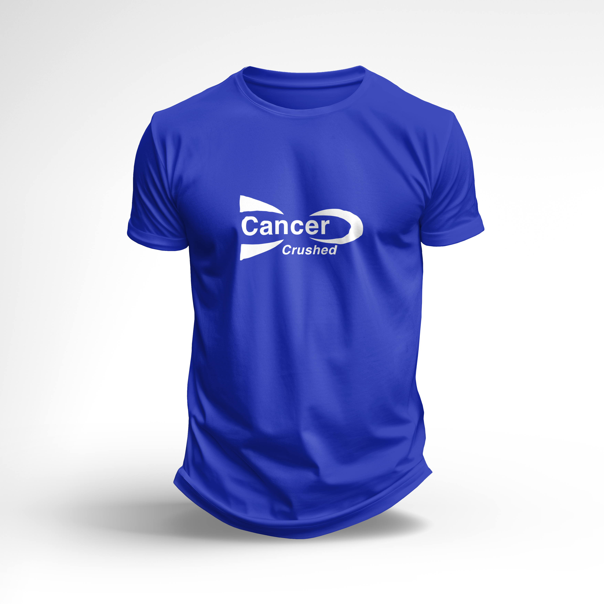
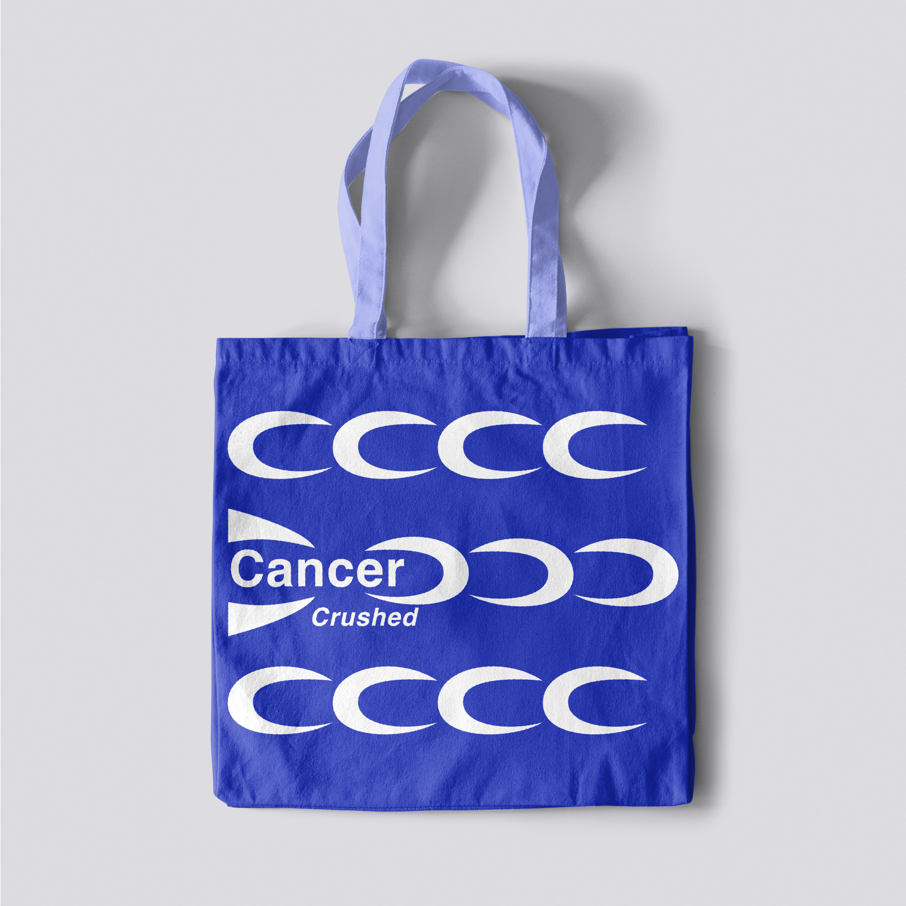

MERCH

T-Shirt
$25.00

Tote Bag
$15.00

What is Cancer? Where does it come from? How does it affect us and what makes us susceptible to cancer? Get your questions answered at this introductory presentation.
Learn how healthy eating patterns can help promote cancer prevention. Recipe featured: tofu + vegetable stir fry. Take-home recipe and info cards provided.
Hear the stories and experiences of breast cancer survivors, from when they were diagnosed to how they may still be affected today. Q&A at end.
Learn how healthy eating patterns can help promote cancer prevention. Recipe featured: hearty vegetable + bean soup with rice. Take-home recipe and info cards provided.
Learn how regular rigorous physical activity helps to lower cancer risk. Introduction to easy at-home exercises to incorporate into daily or weekly routines.
Ryan Diver and Lauren Teras speak about their research on childhood cancer long-term survivors and the discovery of new variants of cancer suceptibility genes and what this means for cancer development in adulthood.
Learn how healthy eating patterns can help promote cancer prevention. Recipe featured: fruit + veggie smoothies. Take-home recipe and info cards provided.
Learn about the Cancer Survivor's Network, a subgroup within the American Cancer Society, and connect with fellow cancer survivors, their caretakers and family.